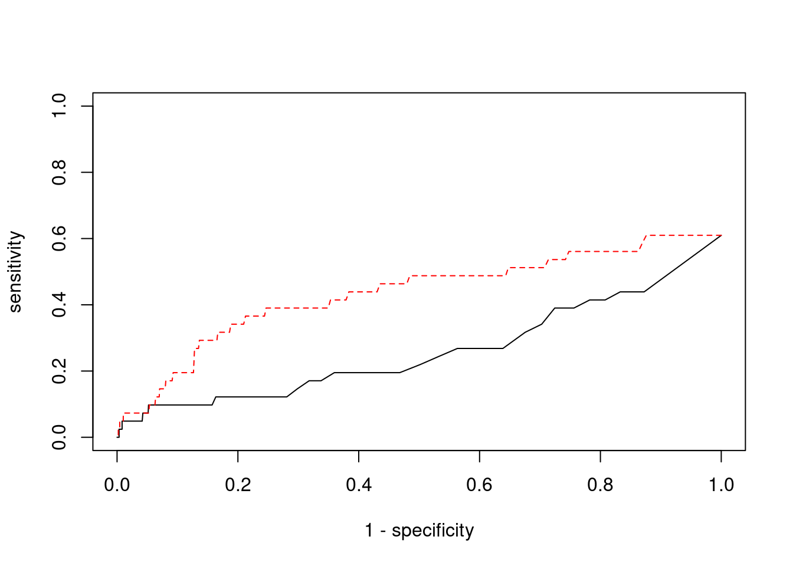

BMI - Brain Cerebellar Hemisphere
sheng Qian
2021-2-6
Last updated: 2022-02-13
Checks: 6 1
Knit directory: cTWAS_analysis/
This reproducible R Markdown analysis was created with workflowr (version 1.6.2). The Checks tab describes the reproducibility checks that were applied when the results were created. The Past versions tab lists the development history.
Great! Since the R Markdown file has been committed to the Git repository, you know the exact version of the code that produced these results.
Great job! The global environment was empty. Objects defined in the global environment can affect the analysis in your R Markdown file in unknown ways. For reproduciblity it’s best to always run the code in an empty environment.
The command set.seed(20211220) was run prior to running the code in the R Markdown file. Setting a seed ensures that any results that rely on randomness, e.g. subsampling or permutations, are reproducible.
Great job! Recording the operating system, R version, and package versions is critical for reproducibility.
Nice! There were no cached chunks for this analysis, so you can be confident that you successfully produced the results during this run.
Using absolute paths to the files within your workflowr project makes it difficult for you and others to run your code on a different machine. Change the absolute path(s) below to the suggested relative path(s) to make your code more reproducible.
| absolute | relative |
|---|---|
| /project2/xinhe/shengqian/cTWAS/cTWAS_analysis/data/ | data |
| /project2/xinhe/shengqian/cTWAS/cTWAS_analysis/code/ctwas_config.R | code/ctwas_config.R |
Great! You are using Git for version control. Tracking code development and connecting the code version to the results is critical for reproducibility.
The results in this page were generated with repository version eb13ecf. See the Past versions tab to see a history of the changes made to the R Markdown and HTML files.
Note that you need to be careful to ensure that all relevant files for the analysis have been committed to Git prior to generating the results (you can use wflow_publish or wflow_git_commit). workflowr only checks the R Markdown file, but you know if there are other scripts or data files that it depends on. Below is the status of the Git repository when the results were generated:
Ignored files:
Ignored: .ipynb_checkpoints/
Untracked files:
Untracked: code/.ipynb_checkpoints/
Untracked: code/AF_out/
Untracked: code/BMI_out/
Untracked: code/T2D_out/
Untracked: code/ctwas_config.R
Untracked: code/mapping.R
Untracked: code/out/
Untracked: code/run_AF_analysis.sbatch
Untracked: code/run_AF_analysis.sh
Untracked: code/run_AF_ctwas_rss_LDR.R
Untracked: code/run_BMI_analysis.sbatch
Untracked: code/run_BMI_analysis.sh
Untracked: code/run_BMI_ctwas_rss_LDR.R
Untracked: code/run_T2D_analysis.sbatch
Untracked: code/run_T2D_analysis.sh
Untracked: code/run_T2D_ctwas_rss_LDR.R
Untracked: data/.ipynb_checkpoints/
Untracked: data/AF/
Untracked: data/BMI/
Untracked: data/T2D/
Untracked: data/UKBB/
Untracked: data/UKBB_SNPs_Info.text
Untracked: data/gene_OMIM.txt
Untracked: data/gene_pip_0.8.txt
Untracked: data/mashr_Heart_Atrial_Appendage.db
Untracked: data/summary_known_genes_annotations.xlsx
Untracked: data/untitled.txt
Note that any generated files, e.g. HTML, png, CSS, etc., are not included in this status report because it is ok for generated content to have uncommitted changes.
These are the previous versions of the repository in which changes were made to the R Markdown (analysis/BMI_Brain_Cerebellar_Hemisphere.Rmd) and HTML (docs/BMI_Brain_Cerebellar_Hemisphere.html) files. If you’ve configured a remote Git repository (see ?wflow_git_remote), click on the hyperlinks in the table below to view the files as they were in that past version.
| File | Version | Author | Date | Message |
|---|---|---|---|---|
| Rmd | eb13ecf | sq-96 | 2022-02-13 | update |
| html | e6bc169 | sq-96 | 2022-02-13 | Build site. |
| Rmd | 87fee8b | sq-96 | 2022-02-13 | update |
Weight QC
[1] 11315
1 2 3 4 5 6 7 8 9 10 11 12 13 14 15 16
1087 770 652 425 535 625 556 423 440 443 698 615 209 381 372 538
17 18 19 20 21 22
709 170 904 333 134 296 [1] 8732[1] 0.771719Load ctwas results
Check convergence of parameters
********************************************************Note: As of version 1.0.0, cowplot does not change the default ggplot2 theme anymore. To recover the previous behavior, execute:
theme_set(theme_cowplot())********************************************************
| Version | Author | Date |
|---|---|---|
| e6bc169 | sq-96 | 2022-02-13 |
gene snp
0.0097194951 0.0002858406 gene snp
17.69694 17.91719 [1] 336107[1] 11315 7535010 gene snp
0.005790536 0.114815368 [1] 0.06976714 17.00374821Genes with highest PIPs
| Version | Author | Date |
|---|---|---|
| e6bc169 | sq-96 | 2022-02-13 |
genename region_tag susie_pip mu2 PVE z num_eqtl
11541 NDUFS3 11_29 0.9962485 1179.67597 3.496656e-03 -11.094065 2
3395 CCND2 12_4 0.9680469 28.44906 8.193826e-05 -5.093897 2
978 PIK3C3 18_23 0.9528104 51.82338 1.469111e-04 6.895999 2
7720 ZNF12 7_10 0.9348631 27.64261 7.688639e-05 5.105792 2
4962 DCAF7 17_37 0.8835003 28.48295 7.487109e-05 5.436897 1
7905 CASP7 10_71 0.8756920 24.35749 6.346093e-05 4.584307 1
9464 ZBTB41 1_98 0.8620817 1788.23409 4.586646e-03 4.618133 1
8843 LAMB2 3_34 0.8204281 138.48498 3.380381e-04 -7.470604 1
518 KCNH2 7_93 0.7942987 40.88570 9.662237e-05 6.351764 2
8913 EFEMP2 11_36 0.7871532 56.09348 1.313694e-04 -8.200649 1
1242 XRN2 20_15 0.7859432 23.48257 5.491099e-05 -4.448815 3
7481 SERPINI1 3_103 0.7809032 21.25113 4.937439e-05 -3.915915 2
4684 YWHAQ 2_6 0.7692830 25.68236 5.878189e-05 4.910669 1
3471 YIPF4 2_20 0.7571586 628.63085 1.416136e-03 2.867583 4
1398 CBX5 12_33 0.7455317 25.06672 5.560144e-05 -4.691159 1
8350 TAP1 6_27 0.7394351 29.02963 6.386515e-05 5.285188 1
3479 SLF2 10_64 0.7337623 30.51729 6.662294e-05 4.779614 2
8202 NCKAP5L 12_31 0.7241699 49.53282 1.067225e-04 -8.217199 1
8279 NLRC3 16_3 0.7208904 33.48739 7.182457e-05 5.242873 1
4586 CSNK1G2 19_2 0.7170424 31.69883 6.762550e-05 -5.548840 2Genes with largest effect sizes
| Version | Author | Date |
|---|---|---|
| e6bc169 | sq-96 | 2022-02-13 |
genename region_tag susie_pip mu2 PVE z
7785 CCDC171 9_13 0.000000e+00 53826.03 0.000000e+00 7.950925
7784 PSIP1 9_13 0.000000e+00 45985.54 0.000000e+00 8.364023
6221 CNNM2 10_66 1.346210e-03 36525.78 1.462967e-04 -5.132086
6469 ARL14EP 11_21 0.000000e+00 28862.04 0.000000e+00 6.330947
5419 MFAP1 15_16 0.000000e+00 24545.02 0.000000e+00 4.302998
12479 RP11-757G1.6 11_38 1.091866e-05 24451.87 7.943356e-07 4.318888
8035 LEO1 15_21 8.435874e-04 23922.49 6.004251e-05 4.647326
13446 LINC02019 3_35 1.410155e-07 23283.21 9.768592e-09 -4.344405
3007 CISH 3_35 0.000000e+00 22927.99 0.000000e+00 -4.823376
11730 CKMT1A 15_16 0.000000e+00 21983.06 0.000000e+00 4.129652
10888 MRPL21 11_38 0.000000e+00 21546.15 0.000000e+00 3.981813
3006 HEMK1 3_35 0.000000e+00 19748.95 0.000000e+00 -4.681781
1065 CCNT2 2_80 1.380068e-04 19270.93 7.912717e-06 3.713024
3139 PLCL1 2_117 0.000000e+00 19186.48 0.000000e+00 -5.641781
5423 LYSMD2 15_21 0.000000e+00 18804.59 0.000000e+00 -5.231719
8114 MAP1A 15_16 0.000000e+00 17090.99 0.000000e+00 3.818160
1452 MAST3 19_14 0.000000e+00 16326.58 0.000000e+00 -2.208055
9538 NSUN3 3_59 0.000000e+00 16204.68 0.000000e+00 4.755360
8409 ADAL 15_16 0.000000e+00 15308.09 0.000000e+00 -2.861302
130 CACNA2D2 3_35 0.000000e+00 14672.46 0.000000e+00 -4.013907
num_eqtl
7785 1
7784 1
6221 1
6469 2
5419 1
12479 2
8035 1
13446 2
3007 1
11730 1
10888 2
3006 1
1065 1
3139 1
5423 1
8114 2
1452 1
9538 1
8409 1
130 1Genes with highest PVE
genename region_tag susie_pip mu2 PVE z
2642 PTPMT1 11_29 0.456199431 14326.38788 1.944527e-02 -3.623029
9530 ERBB4 2_125 0.703048832 5989.36197 1.252819e-02 -7.022927
286 CPS1 2_124 0.364178652 4800.47918 5.201415e-03 -3.562363
9464 ZBTB41 1_98 0.862081694 1788.23409 4.586646e-03 4.618133
3081 LANCL1 2_124 0.316377606 4817.32022 4.534545e-03 -3.534889
11541 NDUFS3 11_29 0.996248489 1179.67597 3.496656e-03 -11.094065
3471 YIPF4 2_20 0.757158642 628.63085 1.416136e-03 2.867583
8843 LAMB2 3_34 0.820428135 138.48498 3.380381e-04 -7.470604
11726 VPS52 6_28 0.631263880 126.68310 2.379316e-04 1.602512
978 PIK3C3 18_23 0.952810400 51.82338 1.469111e-04 6.895999
6221 CNNM2 10_66 0.001346210 36525.77620 1.462967e-04 -5.132086
11281 RNF5 6_26 0.246996136 181.54918 1.334157e-04 6.336614
8913 EFEMP2 11_36 0.787153197 56.09348 1.313694e-04 -8.200649
1460 STX1B 16_24 0.512675194 80.29381 1.224748e-04 -10.208969
7606 MFSD8 4_84 0.005704771 7091.89844 1.203714e-04 2.512064
8202 NCKAP5L 12_31 0.724169874 49.53282 1.067225e-04 -8.217199
518 KCNH2 7_93 0.794298680 40.88570 9.662237e-05 6.351764
13683 DHRS11 17_22 0.480895777 61.79950 8.842160e-05 -8.128326
3395 CCND2 12_4 0.968046867 28.44906 8.193826e-05 -5.093897
7263 TAL1 1_29 0.563761055 47.90691 8.035551e-05 -6.865849
num_eqtl
2642 2
9530 1
286 1
9464 1
3081 1
11541 2
3471 4
8843 1
11726 1
978 2
6221 1
11281 2
8913 1
1460 1
7606 1
8202 1
518 2
13683 1
3395 2
7263 1Genes with largest z scores
genename region_tag susie_pip mu2 PVE z
41 RBM6 3_35 1.197169e-03 934.02152 3.326862e-06 12.536042
33 RBM5 3_35 6.485456e-04 978.24576 1.887604e-06 12.473227
7609 MST1R 3_35 3.362246e-10 248.31437 2.484013e-13 -11.520759
9166 KCTD13 16_24 1.073120e-01 109.74935 3.504070e-05 -11.490673
11541 NDUFS3 11_29 9.962485e-01 1179.67597 3.496656e-03 -11.094065
8510 INO80E 16_24 2.413557e-02 98.53039 7.075389e-06 11.076716
7604 RNF123 3_35 1.409572e-11 847.57043 3.554558e-14 -10.957103
12511 RP11-1348G14.4 16_23 2.267213e-01 91.80001 6.192377e-05 10.676318
10122 APOBR 16_23 1.381622e-01 93.79047 3.855408e-05 -10.539834
9282 NUPR1 16_23 1.381622e-01 93.79047 3.855408e-05 -10.539834
12037 NPIPB7 16_23 1.036436e-01 90.82685 2.800780e-05 10.509650
6310 DOC2A 16_24 3.832965e-02 87.49877 9.978361e-06 -10.319868
10802 C6orf106 6_28 4.122083e-05 118.83214 1.457381e-08 -10.263559
1460 STX1B 16_24 5.126752e-01 80.29381 1.224748e-04 -10.208969
8172 ZNF646 16_24 5.765581e-02 75.21582 1.290253e-05 -10.000364
8171 ZNF668 16_24 5.765581e-02 75.21582 1.290253e-05 10.000364
2889 COL4A3BP 5_44 3.736444e-02 69.79921 7.759459e-06 9.828145
484 PRSS8 16_24 1.767606e-02 71.38555 3.754207e-06 9.764760
649 UHRF1BP1 6_28 1.067072e-07 88.10457 2.797141e-11 -9.654025
1937 BCKDK 16_24 1.389819e-02 68.02791 2.812989e-06 -9.637985
num_eqtl
41 1
33 1
7609 3
9166 1
11541 2
8510 1
7604 1
12511 1
10122 1
9282 1
12037 1
6310 2
10802 1
1460 1
8172 1
8171 1
2889 1
484 1
649 2
1937 1Comparing z scores and PIPs
| Version | Author | Date |
|---|---|---|
| e6bc169 | sq-96 | 2022-02-13 |
| Version | Author | Date |
|---|---|---|
| e6bc169 | sq-96 | 2022-02-13 |
[1] 0.02306673 genename region_tag susie_pip mu2 PVE z
41 RBM6 3_35 1.197169e-03 934.02152 3.326862e-06 12.536042
33 RBM5 3_35 6.485456e-04 978.24576 1.887604e-06 12.473227
7609 MST1R 3_35 3.362246e-10 248.31437 2.484013e-13 -11.520759
9166 KCTD13 16_24 1.073120e-01 109.74935 3.504070e-05 -11.490673
11541 NDUFS3 11_29 9.962485e-01 1179.67597 3.496656e-03 -11.094065
8510 INO80E 16_24 2.413557e-02 98.53039 7.075389e-06 11.076716
7604 RNF123 3_35 1.409572e-11 847.57043 3.554558e-14 -10.957103
12511 RP11-1348G14.4 16_23 2.267213e-01 91.80001 6.192377e-05 10.676318
10122 APOBR 16_23 1.381622e-01 93.79047 3.855408e-05 -10.539834
9282 NUPR1 16_23 1.381622e-01 93.79047 3.855408e-05 -10.539834
12037 NPIPB7 16_23 1.036436e-01 90.82685 2.800780e-05 10.509650
6310 DOC2A 16_24 3.832965e-02 87.49877 9.978361e-06 -10.319868
10802 C6orf106 6_28 4.122083e-05 118.83214 1.457381e-08 -10.263559
1460 STX1B 16_24 5.126752e-01 80.29381 1.224748e-04 -10.208969
8172 ZNF646 16_24 5.765581e-02 75.21582 1.290253e-05 -10.000364
8171 ZNF668 16_24 5.765581e-02 75.21582 1.290253e-05 10.000364
2889 COL4A3BP 5_44 3.736444e-02 69.79921 7.759459e-06 9.828145
484 PRSS8 16_24 1.767606e-02 71.38555 3.754207e-06 9.764760
649 UHRF1BP1 6_28 1.067072e-07 88.10457 2.797141e-11 -9.654025
1937 BCKDK 16_24 1.389819e-02 68.02791 2.812989e-06 -9.637985
num_eqtl
41 1
33 1
7609 3
9166 1
11541 2
8510 1
7604 1
12511 1
10122 1
9282 1
12037 1
6310 2
10802 1
1460 1
8172 1
8171 1
2889 1
484 1
649 2
1937 1Sensitivity, specificity and precision for silver standard genes
[1] 41[1] 25[1] 4.590639[1] 8[1] 261 genename region_tag susie_pip mu2 PVE z num_eqtl
7905 CASP7 10_71 0.875692 24.35749 6.346093e-05 4.584307 1 ctwas TWAS
0.00000000 0.07317073 ctwas TWAS
0.9992914 0.9771479 ctwas TWAS
0.00000000 0.01149425 
| Version | Author | Date |
|---|---|---|
| e6bc169 | sq-96 | 2022-02-13 |
sessionInfo()R version 3.6.1 (2019-07-05)
Platform: x86_64-pc-linux-gnu (64-bit)
Running under: Scientific Linux 7.4 (Nitrogen)
Matrix products: default
BLAS/LAPACK: /software/openblas-0.2.19-el7-x86_64/lib/libopenblas_haswellp-r0.2.19.so
locale:
[1] LC_CTYPE=en_US.UTF-8 LC_NUMERIC=C
[3] LC_TIME=en_US.UTF-8 LC_COLLATE=en_US.UTF-8
[5] LC_MONETARY=en_US.UTF-8 LC_MESSAGES=en_US.UTF-8
[7] LC_PAPER=en_US.UTF-8 LC_NAME=C
[9] LC_ADDRESS=C LC_TELEPHONE=C
[11] LC_MEASUREMENT=en_US.UTF-8 LC_IDENTIFICATION=C
attached base packages:
[1] stats graphics grDevices utils datasets methods base
other attached packages:
[1] readxl_1.3.1 cowplot_1.0.0 ggplot2_3.3.5 workflowr_1.6.2
loaded via a namespace (and not attached):
[1] tidyselect_1.1.1 xfun_0.29 purrr_0.3.4 colorspace_2.0-2
[5] vctrs_0.3.8 generics_0.1.1 htmltools_0.5.2 yaml_2.2.1
[9] utf8_1.2.2 blob_1.2.2 rlang_0.4.12 jquerylib_0.1.4
[13] later_0.8.0 pillar_1.6.4 glue_1.5.1 withr_2.4.3
[17] DBI_1.1.1 bit64_4.0.5 lifecycle_1.0.1 stringr_1.4.0
[21] cellranger_1.1.0 munsell_0.5.0 gtable_0.3.0 evaluate_0.14
[25] memoise_2.0.1 labeling_0.4.2 knitr_1.36 fastmap_1.1.0
[29] httpuv_1.5.1 fansi_0.5.0 highr_0.9 Rcpp_1.0.7
[33] promises_1.0.1 scales_1.1.1 cachem_1.0.6 farver_2.1.0
[37] fs_1.5.2 bit_4.0.4 digest_0.6.29 stringi_1.7.6
[41] dplyr_1.0.7 rprojroot_2.0.2 grid_3.6.1 tools_3.6.1
[45] magrittr_2.0.1 tibble_3.1.6 RSQLite_2.2.8 crayon_1.4.2
[49] whisker_0.3-2 pkgconfig_2.0.3 ellipsis_0.3.2 data.table_1.14.2
[53] assertthat_0.2.1 rmarkdown_2.11 R6_2.5.1 git2r_0.26.1
[57] compiler_3.6.1